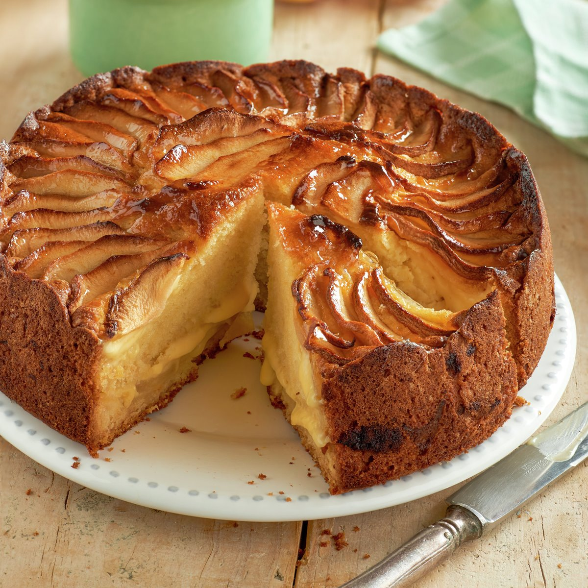

Apple Tart

Description
Apple pie is a fruit pie made with a dough covered with apple. There are many variations, and the apple can be sliced or in compote.
The apples can be placed directly on top of the dough or on a cream base.
Ingredients
- 400 grams of shortcrust pastry.
- 3/4 kg of reineta apples.
- 1/2 teaspoon of cinnamon powder.
- 2 tablespoons of brown sugar.
- 200 grams of pastry cream.
- 2 tablespoons apricot jam (apricot).
- 1 tablespoon of water.
- 2 tablespoons of lemon juice,
Steps
- Roll out the dough and line a 25 cm. high rim mold with it. The dough should not be too thin.
- Peel the apples, cut them into thin slices and mix them with the sugar and cinnamon.
- Next, cover the base of the cake with the pastry cream and place the apples on top, making sure that the last layer forms a nice pattern. Bake in a preheated oven at medium temperature for 40 minutes.
- Next, cook the marmalade, together with the water and the lemon juice and let it boil for a few minutes, so that it mixes well.
- Finally, once the cake is baked, paint the entire surface of the apples with the diluted marmalade. Serve cold.
Back